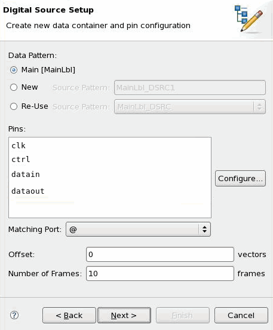
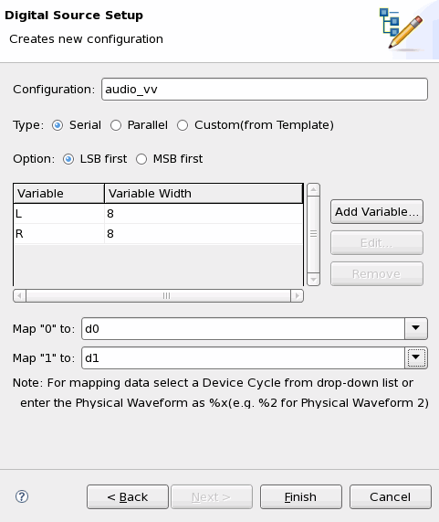

Creating a Digital Source setup
This task describes how to create a Digital Source setup which includes the VVC and its usage.
Before you begin
You have defined the MAIN label and you must make sure that at least one vector is allocated in the MAIN label.
If you want to reuse a DSRC label as the source memory, you must make sure that the DSRC label has been created.
Procedures
Step 1: open the Setup Wizard
- In the editor of the MAIN label, right-click and select New Setup.
- The Setup Wizard opens. On the Select a Setup page, select Digital Source from the Protocol Type list, and then click Next.
Step 2: set the data container, source pins, and VVC usage
The Digital Source Setup page opens. On this page, you need to select the data container where the source data is located and the source pins. You must also set the parameters of the VVC usage: vector offset and the number of frames.

- Select a pattern as the data container.
- If you select Main, the Digital Source setup is for FLAT DSM setup. See Creating a Digital Source Setup for FLAT DSM setup.
- If you select NEW and enter the label name, a new DSRC label with this name is created and all the source data will be located in this DSRC label.
- If you select Re-Use and select a created DSRC label, the source data will be located in this DSRC label.
- Select the source pins for the Pins field:
To modify the pin list, click Configure.
This opens the Pin Selection window, which allows to add or remove pins, or to modify the sequence of pins.
On the left, the Pin Selection View shows all possible pins, on the right the currently defined pins.
When done in the Pin Pin Selection View, click OK.
The modified list is shown in the Setup Wizard.
- Select the port containing the source pins from Matching Port
list.Note The list of the source pins must exactly match with the port.
- Enter a number in the Offset text box, which sets the offset to the first vector in the DSRC label where the data is sourced. For the first VVC usage for the selected DSRC label, the offset must be 0.
- Enter a number in the Number of Frames text box, which is used to allocate the source memory.
- Click Next.
Step 3: define the vector variable configuration
The second Digital Source Setup page opens. On this page, you can define the vector variable configuration which describes the structure of the frame and the mapping between the downloaded data and the waveform index. First enter the VVC name in the Configuration text box.

Then you have two ways to edit the VVC.
- directly enter the VVC in the editor.
- set the parameters of the VVC in the Setup Wizard to automatically create a VVC.
For the first method:
- On the Type panel, Select Custom (from Template) button, all the subsequent buttons will be disabled.
- Click Next, the VVC editor opens. You can edit the template according to the VVC syntax. If the frame includes static data, select the Initialize Static Data check box.
- When you finish, click Finish.
You can also set the VVC in the Setup Wizard and then the VVC is created automatically according to your settings.
The setting of VVC refers to two things: the definition of the frame pattern and the mapping between downloaded data and the waveform index.
- The frame pattern for each source pin is decided by Type,
Option, and Variable. Select the
Type button.
- If you select Serial, all the variables compse a frame.
- If you select Parallel, each variable is a frame for each source pin or each bit of a variable is a frame for each source pin. See the table below.
- Select the Option button.
- If you select LSB first, the least significant bit of the variable appears in the frame pattern first. See the following example:
PINS datain SOURCE_DATA_TEMPLATE L[0-7];R[0-7]
- If you select MSB first, the most significant bit of the variable appears in the frame pattern first.
- Add the variables.
- Click Add Variable, the Variable Configuration window opens.
- Enter the variable name and width, and then click OK.
- Repeat the above process to add the required variables. The order of the variables
creation is the order how the variables appear in the frame.
The following table shows all the possible cases that the combination of pin number, type, and variables decides the frame pattern.
In this table, we assume that the MSB first option s selected and the parameters
m, n > 1.Pins
Variables
Type
Frame pattern
1 pin
n variables
Serial
Pins Pin_11)SOURCE_DATA_TEMPLATE var_1[N1-0], ..., var_n[Nn-0]m pins
n variables
Serial
Pins Pin_1...Pin_mSOURCE_DATA_TEMPLATE var_1[N1-0], ..., var_n[Nn-0]n pins
n variables
Serial
Pins Pin_1...Pin_nSOURCE_DATA_TEMPLATE var_1[N1-0], ..., var_n[Nn-0]n pins
n variables and their widths are same
Parallel
Pins Pin_1SOURCE_DATA_TEMPLATE var_1[N1-0]...Pins Pin_nSOURCE_DATA_TEMPLATE var_n[N1-0]n pins
1 variable with the width of n
Parallel
Pins Pin_1SOURCE_DATA_TEMPLATE var_1[n]...Pins Pin_nSOURCE_DATA_TEMPLATE var_1[0]
- Set the mapping data. Select the physical waveform index for binary data(0/1).
- Click Finish.
Results
Open the Outline view, you can see the created Digital Source setup which is named by the VVC name.
If you have selected Main on the Data Container panel, you need to open the MAIN label from which you started the Setup Wizard with the pattern editor in order to see the Digital Source setup in the Outline view.
If you have selected New or Re-use on the Data Container panel, you need to open the chosen DSRC label with the pattern editor in order to see the Digital Source setup in the Outline view.
In the Outline view, you can edit and delete the Digital Source setup by right-clicking it.
Examples
Digital Source setup of audio device

Create source port and new data container |
|
|---|---|
Data Container |
New DSRC label |
Pins |
datain |
Matching port |
dataport |
Offset |
0 |
Number of frames |
256 |
Create new configuration |
|
|---|---|
Configuration |
audio_vvc |
Type |
Serial |
Option |
MSB first |
Variable(width) |
VVLeft(8) VVRight(8) |
Map "0" to |
d0 |
Map "1" to |
d1 |
After you finish, the Digital Source setup audio_vcc appears in the
Outline view. Open it, the VVC audio_vvc is shown as the
following:
ATTR DIGDATA #Source type #Declaration of variables VARIABLES VVLeft,VVRight PINS datain SOURCE_DATA_TEMPLATE VVLeft[7-0],VVRight[7-0] MAPPING 0 d0 1 d1
According
to the frame structure, you need use semicolon in the SOURCE_DATA_TEMPLATE
section. You can open the Digital Source setup in the Outline view and edit it as the
following:
SOURCE_DATA_TEMPLATE L[7-0];R[7-0]
The semicolon means only the bits of frame section #2 and #4 included in the source memory, and the bits of frame section #3 not included.
VVC of video device

Create source port and new data container |
|
|---|---|
Data Container |
New DSRC label |
Pins |
R_In G_In B_In |
Matching port |
dataport |
Offset |
0 |
Number of frames |
256 |
Create new configuration |
|
|---|---|
Configuration |
video_vvc |
Type |
Parallel |
Option |
MSB first |
Variable(width) |
VV_Red(8) VV_Green(8) VV_Blue(8) |
Map "0" to |
d0 |
Map "1" to |
d1 |
After you finish, the Digital Source setup video_vcc appears in the
Outline view. Open it, the VVC video_vcc is shown as the
following:
ATTR DIGDATA #Source type #Declaration of variables VARIABLES VV_Red,VV_Green,VV_Blue PINS R_In SOURCE_DATA_TEMPLATE VV_Red[7-0] MAPPING 0 d0 1 d1 PINS G_In SOURCE_DATA_TEMPLATE VV_Green[7-0] MAPPING 0 d0 1 d1 PINS B_In SOURCE_DATA_TEMPLATE VV_Blue[7-0] MAPPING 0 d0 1 d1
VVC of parallel audio device

Create new data container and pin configuration |
|
|---|---|
Data Container |
Re-use DSRC label |
Pins |
R_In G_In B_In |
Matching port |
dataport |
Offset |
0 |
Number of frames |
256 |
Create new configuration |
|
|---|---|
Configuration |
p_audio_vvc |
Type |
Custom (from Template) |
If you want to use two variables, you cannot set the parameters in the Setup Wizard
and then automatically create the VVC. The reason is that the number of variables does not match
the number of source pins. You must directly enter the VVC in the editor which is launched by
clicking the Custom (from Template) button on the
Type panel. The VVC p_audio_vvc is shown as the
following:
ATTR DIGDATA #Source type #Declaration of variables VARIABLES Left_VV,Right_VV PINS datain_7 SOURCE_DATA_TEMPLATE Left_VV[7];Right_VV[7] MAPPING 0 d0 1 d1 PINS datain_6 SOURCE_DATA_TEMPLATE Left_VV[6];Right_VV[6] MAPPING 0 d0 1 d1 PINS datain_5 SOURCE_DATA_TEMPLATE Left_VV[5];Right_VV[5] MAPPING 0 d0 1 d1 PINS datain_4 SOURCE_DATA_TEMPLATE Left_VV[4];Right_VV[4] MAPPING 0 d0 1 d1 PINS datain_3 SOURCE_DATA_TEMPLATE Left_VV[3];Right_VV[3] MAPPING 0 d0 1 d1 PINS datain_2 SOURCE_DATA_TEMPLATE Left_VV[2];Right_VV[2] MAPPING 0 d0 1 d1 PINS datain_1 SOURCE_DATA_TEMPLATE Left_VV[1];Right_VV[1] MAPPING 0 d0 1 d1 PINS datain_0 SOURCE_DATA_TEMPLATE Left_VV[0];Right_VV[0] MAPPING 0 d0 1 d1
What to do next
Functional changes
- Introduced before SmarTest 6.3.2
- SmarTest 6.5.2: The VVC and its usage are defined in the Setup Wizard. You can use the GUI setup to automatically create the VVC or directly enter the VVC in the editor.